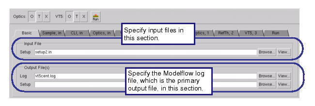

This procedure
describes configuring the Basic tab of VT5
Center in order to set the inputs and outputs.
Figure 1. VT5 Center GUI (Basic Tab)
Prerequisites
The
setup file used with the test pattern
The setup file should be a
sparse setup file and contain the manufacturing conditions used
for the test chip, such as the grid size, fragmentation scheme,
and other important information. See “Litho Setup Files”
in the Calibre OPCpro User’s and Reference Manual.
Calibre
WORKbench invoked and the test pattern loaded
Procedure
- In Calibre
WORKbench, open VT5 Center ().
- Click the Basic tab.
- In the Input File section,
enter the pathname to the setup file or use the Browse button
to navigate to and select the file.
- In the Output File(s) section,
enter names for the output log file and the output setup file.
The output log file is
the primary output for VT5 Center and is used for both analysis
and input for other tools, such as Calibre IPSE.
The output setup file
contains any changes made in this modelflow run, including updated
optical and resist model data.
- Go to “Loading or Creating a Sample Data Set”.
Users of the earlier Model Flow tool should go to the
following locations for information on setting additional fields: